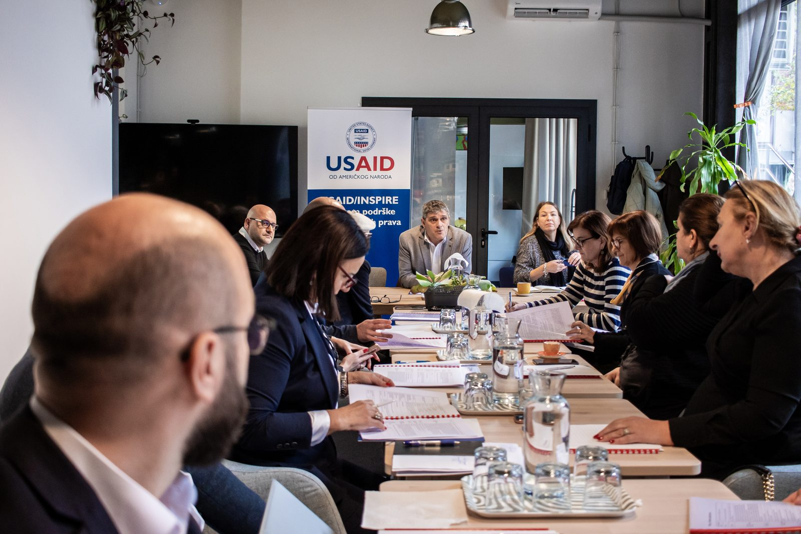

SKRIPTA se bavi javnim politikama, upravljanjem i institucionalnim reformama, posebno tamo gdje dobra rješenja zavise od razumijevanja političkog konteksta, institucija, interesa i načina na koji se promjene zaista stvaraju.
Naše iskustvo nastajalo je kroz više od dvije decenije rada u javnim institucijama, međunarodnim programima, istraživačkim organizacijama i civilnom društvu — od strateškog savjetovanja i razvoja politika do vođenja kompleksnih reformskih i istraživačkih procesa.
Više od dvije decenije iskustva u reformi javne uprave, decentralizaciji i lokalnom upravljanju, od dizajna politika i institucionalnih modela do podrške njihovoj primjeni. Rad uključuje centralne i lokalne nivoe vlasti, jačanje institucija, odnose između različitih nivoa vlasti, međuopćinsku saradnju i razvoj kapaciteta lokalnih zajednica, sa iskustvom iz Bosne i Hercegovine, Moldavije, Ukrajine, Srbije, itd.
Razumijevanje evropskih politika, institucija i reformskih procesa, te njihovog prevođenja u domaće politike i praksu. Iskustvo obuhvata rad sa institucijama vlasti, međunarodnim organizacijama, donatorima i evropskim partnerima na pitanjima reforme, institucionalnog razvoja i EU integracija.
Istraživanja javnih politika, političko-ekonomske i institucionalne analize, procjene potreba i kapaciteta, komparativna istraživanja i evaluacije. Poseban fokus je na razumijevanju onoga što stoji iza formalnih pravila: odnosa moći, institucionalnih podsticaja, interesa i političkih ograničenja koja određuju šta je u praksi moguće.
Demokratsko upravljanje, politička participacija, odgovornost institucija, građansko učešće, zagovaranje i uloga civilnog društva u oblikovanju javnih politika. Iskustvo uključuje rad sa političkim akterima, parlamentima, javnim službenicima, izgradnju kapaciteta organizacija civilnog društva, i saradnju sa lokalnim zajednicama.
Integrisanje rodne i inkluzivne perspektive u istraživanja, politike i programe, uključujući političko učešće žena, društvene narative, govor mržnje, zagovaranje i pristup javnim politikama za različite društvene grupe.
Povezivanje javnih politika, tehnologije i potreba korisnika. Iskustvo uključuje razvoj i procjenu GovTech ekosistema, rad na evropskim inovacijskim programima i podršku javnom sektoru u korištenju digitalnih rješenja za složene društvene i institucionalne izazove.
Strateško planiranje, organizacijski razvoj, razvoj programa, institucionalno učenje i praćenje rezultata. Fokus je na tome da strategija ne ostane dokument, nego postane osnova za jasnije odluke, bolje upravljanje i mjerljiv učinak.
Rad u Bosni i Hercegovini, širom Zapadnog Balkana, Moldaviji, Ukrajini i Srbiji, kao i sa partnerima iz Švedske, Ujedinjenog Kraljevstva, Švicarske, Sjedinjenih Američkih Država i šire. Međunarodno iskustvo za nas nije pitanje prenošenja gotovih modela, već sposobnost da prepoznamo šta se može prenijeti, šta treba prilagoditi i šta će funkcionisati samo ako odgovara lokalnom institucionalnom i političkom kontekstu.

"Nije samo prostor za sastanke, nego iskustvo koje doprinosi uspjehu događaja."
Naše consulting usluge se oslanjaju na isto iskustvo koje smo gradili kroz rad sa partnerima u SKRIPTA IdeaLab prostoru — vidljivo kroz stvarne strateške sesije koje smo vodili.
Sarađivali smo s vodećim donatorima i organizacijama